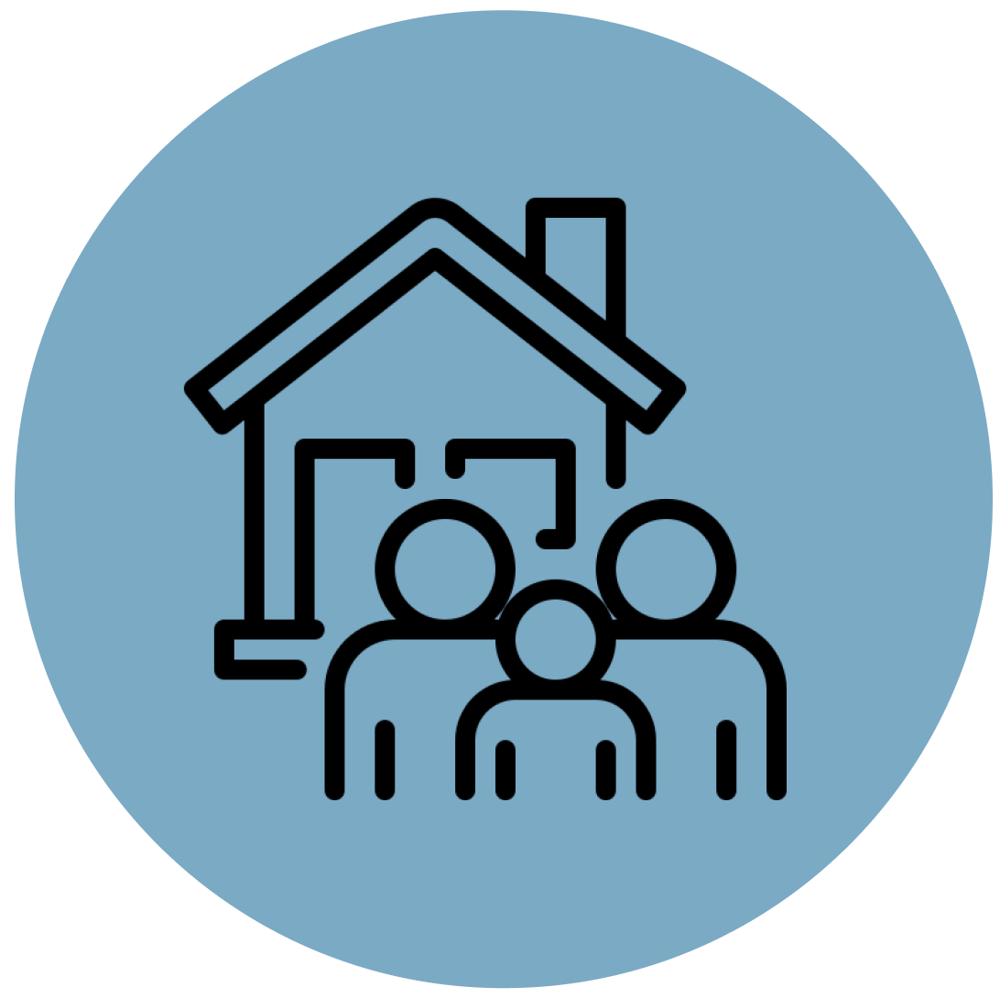
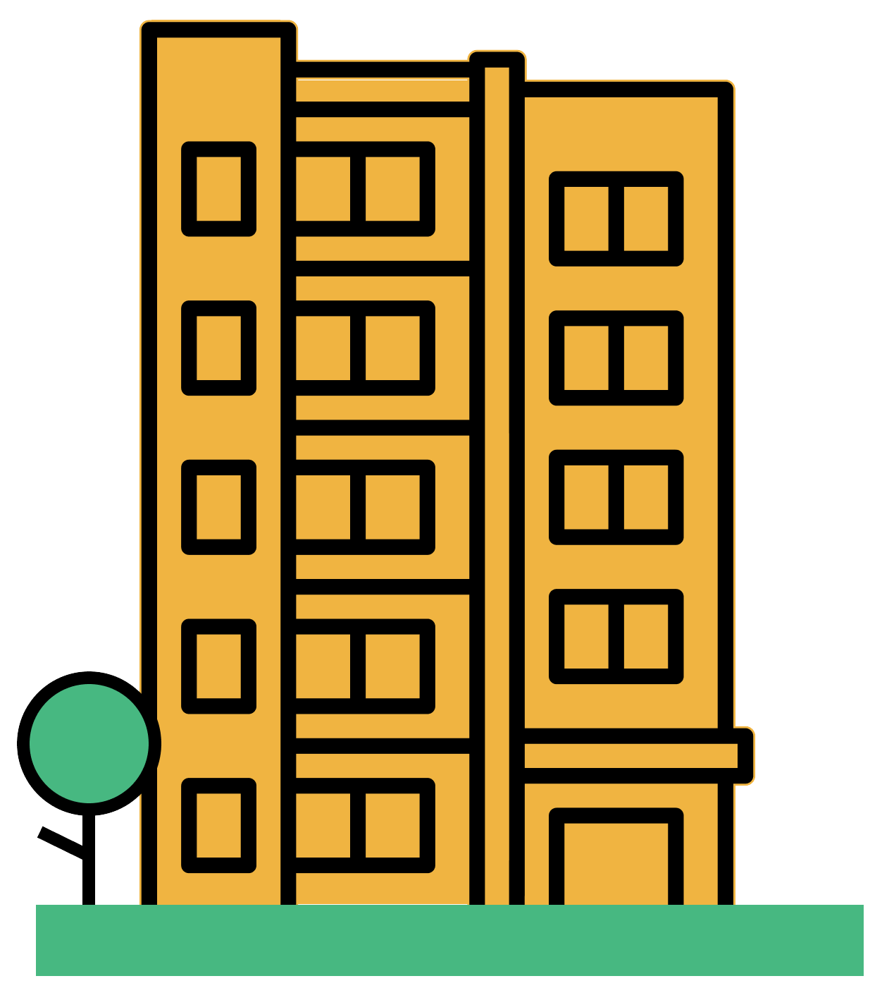

This dashboard was created by CommunityScale as a public platform to access and engage with the Regional Housing Study, led by a partnership of regional planning collaborators including the Michiana Area Council of Governments (MACOG), South Bend Elkhart Regional Partnership (SBERP), and the Community Foundations of Elkhart, Marshall, and St. Joseph Counties. The objective of this dashboard is to outline the study's objectives and priorities, share key observations and findings about the local housing landscape, and highlight recommended strategies to increase housing production and address affordability challenges.
This study is funded by Lilly Endowment Inc through a Giving Funds for Tomorrow (GIFT) VIII grant which is being administered by MACOG with support from SBERP.
The Regional Housing Study's purpose
The Regional Housing Study is intended to offer a regional perspective to complement local planning and policymaking as communities across the three-county area confront and manage housing challenges and opportunities.
The study's goals are to support the range of actions and strategies needed to address today’s and tomorrow’s key housing challenges across the 3-county region:
Establish a regional platform for housing planning and policymaking
Provide resources and technical assistance to help communities navigate local housing issues

Convene dialogue and collaboration between leaders, municipalities, and stakeholders
Overview
Three questions help set the stage for the Regional Housing Study and frame a core finding from the analysis. What constitutes "attainable" - or "affordable" - housing, why are we facing this housing shortage, and how many units do we need to build to start catching up?
What is "attainable housing"?
Housing is considered "attainable" if it costs no more than 30% of a household's monthly income. Households spending beyond this threshold on housing are considered "cost burdened." The higher a community's rate of cost burden, the less generally attainable its local housing supply.
For this analysis, household incomes are measured relative to the "Area Median Income," or "AMI." The table at right summarizes the region's distribution of households by income and the approximate purchase price and rent rates affordable at each level.
AMI
% of the region
Max income
Max affordable price
Max affordable rent
<30%
16%
$25,900
$48,155
$460
30-60%
21%
$51,800
$114,990
$1,020
60-80%
12%
$69,067
$159,560
$1,390
80-100%
10%
$86,333
$204,120
$1,770
100-120%
9%
$103,600
$248,560
$2,140
>120%
32%
>$103,600
>$248,560
>$2,140
For a reference guide to key terms and concepts germane to this housing study and the housing discourse in general, see this glossary resource:
Why is this housing crisis happening now?
Fundamentally, we haven’t been building enough housing for many years.
One goal of this study is to identify the barriers and hurdles that have been limiting housing production in recent years - especially affordable housing production - and provide strategies and an implementation plan to promote more housing development and greater affordability across the region.
See the analysis behind these observations here:
Development costs
Financing and building housing is really expensive right now.
Infrastructure constraints
Infrastructure (sewer, water) isn’t always enough to serve new development - and funding more is complicated.
Labor shortage
There’s a lack of construction labor.
Popular opinion
There remains resistance to change, disagreement about the nature of the problem, and conflict over next steps.
Regulatory friction
Regulations often don’t reflect today’s market conditions and preferences.
Project complexity
Converting vacant lots in existing neighborhoods is an opportunity… but can be complicated.
How many units do we need?
The region should plan for 13,440-16,800 more units over the next decade to keep up with factors like growth, aging population, cost burden, and employment.
This general housing production target includes a range of unit sizes, price points, and structure types. The target is broken down in detail at both the regional and county-by-county level as part of the Regional Housing Study.
See the analysis behind these numbers here:
Overall growth
The region is projected to continue growing at a moderate pace.
More 65+ households
As senior populations grow, more aging households will consider downsizing or modifying their home to age in place.
Housing costs increasingly out of reach
More affordable options are needed to counteract cost burden.
New employment centers added to the region
Expected job growth could add competition for limited housing supply.
Key indicators
The Regional Housing Study includes extensive analysis at both the region and county-by-county scales within the Housing Needs Assessment reports. The following section summarizes some of the most significant indicators of housing affordability and current market trends.
The region's population is growing older.
The 65+ age cohort is projected to grow fastest over the next decade, becoming a significantly larger share of the population.
In general, younger households are more likely to prefer family-oriented housing and neighborhoods where as older households may have a broader range of preferences and priorities, including senior options.
This chart illustrates trends in population by age cohort, both historic and projected. The projection is based on recent trends extended. Depending on economic, policy, and other conditions, the future age distribution may vary over time.
Cost burden is prevalent across the region.
This indicates a shortage of affordable housing options, especially for low-income households.
Lower-income households are much more likely cost-burdened (homeowners and renters alike)
Households are cost burdened when paying more than 30% of their income on housing costs. They are considered severely cost burdened when these costs exceed 50% of their income. For renters, this includes lease rent and utilities. For homeowners, this includes mortgage costs, property taxes, insurance, utilities, and any condo fees. Most of the region's low-income households are cost burdened. Most households earning >80% AMI are not cost burdened.
The affordability gap is widening.
As home prices and interest rates rise, homeownership is increasingly out of reach in the region.
This chart compares the region's median listing price with the home value affordable to a household earning the median household income. A wider gap means higher barrier to entry for first-time homebuyers and increased risk that an existing resident might be priced out of the community if they choose or need to move to a different house.
The calculations behind this chart include consideration of mortgage interest rates, typical down payments, and added monthly costs such as private mortgage insurance, property tax, home insurance, condo fees, and utilities.
Housing production has slowed in recent years.
The region grew steady for many decades but construction has tapered off since 2010.
The region saw relatively consistent housing production for most of the 20th century but the pace has slowed considerably in the past two decades. This table chronicles the community's development history, indicating decades with relatively more or less construction activity. 2020 or later is approximate as new housing units are completed.
Many households feel stuck in their current home, unable to “move on up” or downsize.
People across ages and income levels are struggling to find housing that’s “right-sized” for their life stage.
These factors can effectively "lock" people into their current housing situation whether it matches their evolving needs and preferences or not. Impacts include stalling potential first-time homebuyers, constraining growing families who need more space, and limiting options for potential downsizing seniors.
Rising interest rates
Interest rates have gone up, making moving expensive and first-time buying harder.
Not enough choices
There’s not enough of the kinds of housing people want, especially those affordable to middle incomes, and not too big.
Overall shortage
There’s not enough housing in general, escalating competition and limiting mobility.
New job centers could add even more demand for middle- income housing.
Employment and housing are closely related and need to be in relative balance to promote sustainable economic development.
The three-county region includes major employment centers from higher education to manufacturing and more. Most people who work in the region also live here but many also commute from surrounding communities. The large new job centers planned for St. Joseph County could add pressure to the local housing market, especially if housing is not produced at a rate that balances new demand produced by the added jobs.
These days, people in the region want housing that fits their lifestyle and values.
Household structures and housing preferences have changed significantly since much of the region's housing supply was built.
Today, households are smaller, less likely to have one or more children, and more likely to include non-family or multi generational cohabitants. Future development should be designed to reflect the current diversity of household structures and wider range of housing needs and preferences.
Roommate-ready
Space for multiple generations or roomates.
Down-sized
Smaller units for smaller households
Downtown living
Lively and vibrant neighborhoods, access to amenities and services
Alternative transportation
Parking-optional, to live car-free or car-lite
Connected
Walkability and transit access
Green building
Efficient, low-impact design and systems.
Key findings
The Regional Housing Study concludes with a detailed breakdown of the unit mix the region should plan for over the next 10 years, strategies to help achieve this target, and an implementation plan to guide the Study's project partners as leaders in the region's housing discourse, policymaking, financing, and planning.
The 10-year housing production target is calibrated to keep up with growth while expanding the affordable supply.
Affordable housing production is constrained by the limited availability of federal, state, and local funding sources which are often essential to making projects possible.
The majority of new units should target middle-income households earning just over 100% AMI because these income cohorts are expected to grow fastest and the potential financing gaps are more manageable with tools such as land banks and housing funds.
See the analysis behind these numbers here:
Income (AMI)
Production Target (Units)
<30%
480 - 600
30-60%
1070 - 1340
60-80%
600 - 750
80-100%
600 - 750
100-120%
4120 - 5150
>120%
7600 - 9500
Total
14,470 - 18,090
The region needs more diverse housing types, not just single-family homes.
Given current housing preferences, future housing should trend toward multifamily options to better balance supply and demand.
Housing typologies such as townhomes, small apartments, and large multifamily developments could be located on infill lots within urban neighborhoods and as anchor investments to help revitalize downtowns.

More 50+ units: Needs to remain an outsized share of production to help supply catch up with demand.
More 5-49 units: Needs to remain an outsized share of production to help supply catch up with demand.
More 2-4 units: Very few built recently, production should increase substantially to help supply catch up with demand.
Fewer detatched single family: Does not need to be the primary component of future production; larger share should be attainable to middle-income workforce.
The Strategies Toolkit includes a range of policy ideas and resources to promote more housing production across the region.
Intended audiences include municipalities, counties, and other housing stakeholders and decisionmakers.
The strategies contained in the toolkit combine ideas already in place in parts of the region with best practices drawn from similar places across the country. Each can be tailored to suit a given community's unique context, from urban districts to suburban corridors to rural towns.
Review the full report here:
Administrative capacity
Centralized database
Financing tools
Infill development
Infrastructure investment
Regional coordination
Regulatory improvement
Zoning reform
Financial support like homeownership grants and loan assistance should focus on helping middle-income households afford to buy.
There are few existing resources to help close the financing gap for middle-income housing.
Lower-income housing is already supported by major programs like Federal Low-Income Housing Tax Credits (LIHTC) - and it can be extremely difficult to finances without these federal funds. Middle-income housing requires less support to close the financing gap, making it more suitable for local initiatives interested in spreading limited funds across more units.
The Regional Housing Collaborative will help expand affordable housing and revitalize neighborhoods at a regional scale.
The model combines a land bank and a housing investment fund to convert vacant, abandoned, and derelict properties into infill middle-income housing.
Led by the Community Foundations of Elkhart, Marshall, and St. Joseph Counties, the Collaborative plans to acquire properties, finance their redevelopment, and connect them with income-qualified homeowners across the region.
Land bank
Converting vacant, abandoned, and derelict properties into affordable housing.
Investment fund
Financing affordable housing development with revolving funds.
The Regional Housing Study Implementation Plan charts a course for future housing leadership and production.
The Implementation Plan focuses on how regional planning partners can continue to support affordable housing production by convening dialogue, building capacity, and informing local policy.